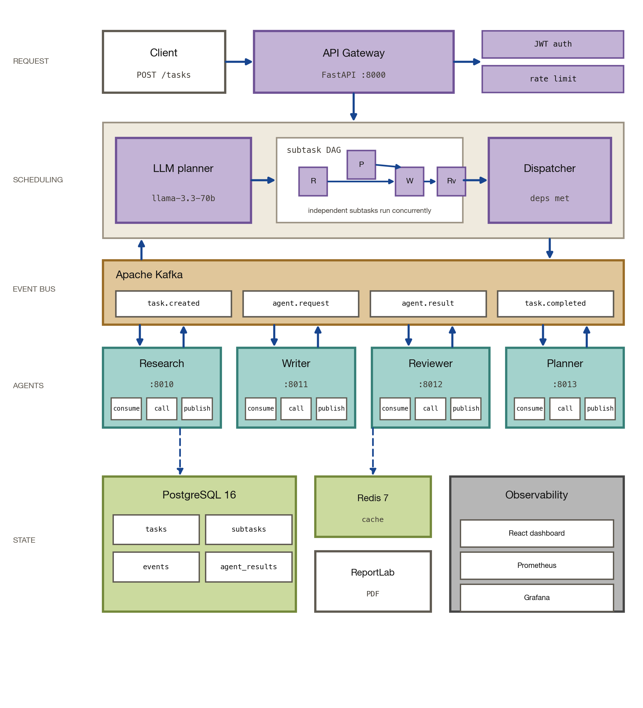

AgentFlock
2026Event-sourced multi-agent orchestration platform for dependency-aware autonomous research workflows.
Multi-agent systems need to coordinate heterogeneous agents while preserving task dependencies and state across distributed execution. AgentFlock implements this as a distributed agent platform in which an API gateway accepts complex tasks, an LLM-based orchestrator decomposes them into subtasks, and specialized research, writing, review, and planning agents execute them as dependencies become available. The services communicate asynchronously through Apache Kafka, with PostgreSQL storing tasks, subtasks, events, and agent results, while Redis provides shared caching and rate limiting. A DAG scheduler tracks completed dependencies and dispatches newly unblocked work, allowing independent subtasks to execute concurrently while dependent stages wait for their required results. The system is packaged as six containerized services with Kubernetes deployment support and includes a React dashboard, Kafka monitoring, Prometheus metrics, and Grafana dashboards for inspecting workflow state and execution history.
